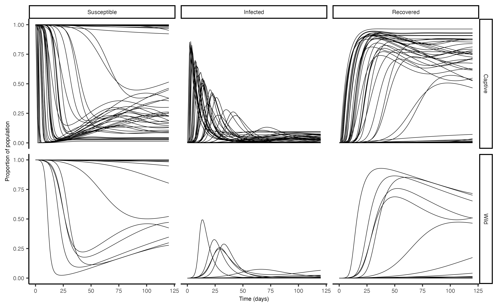
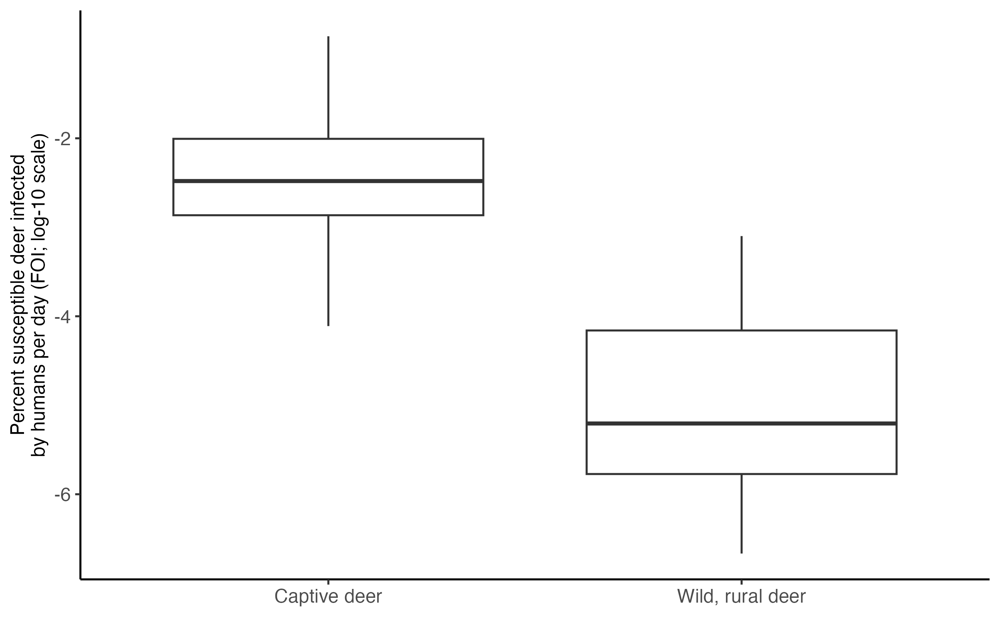
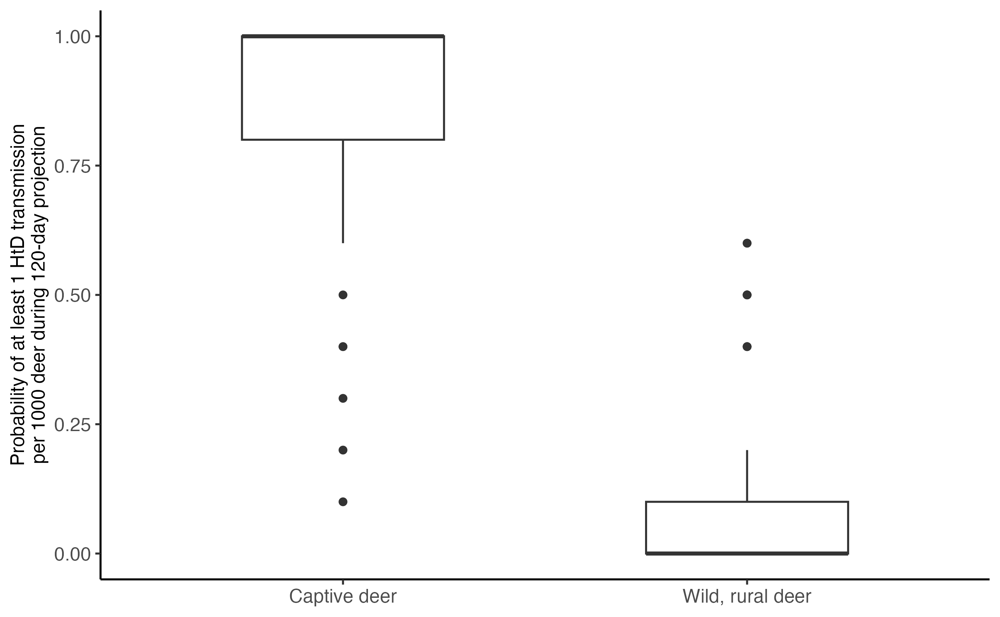
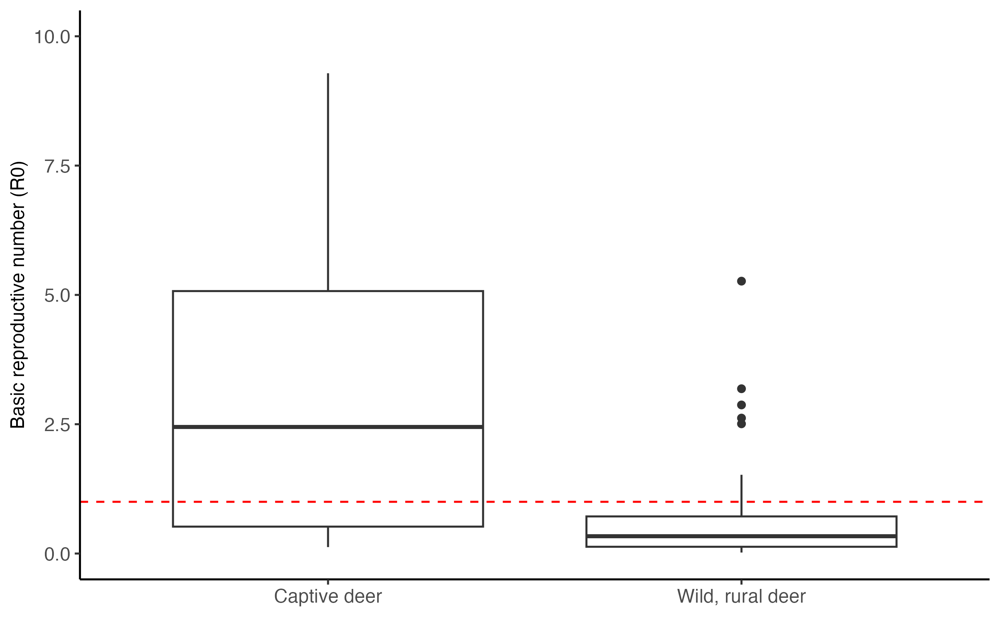
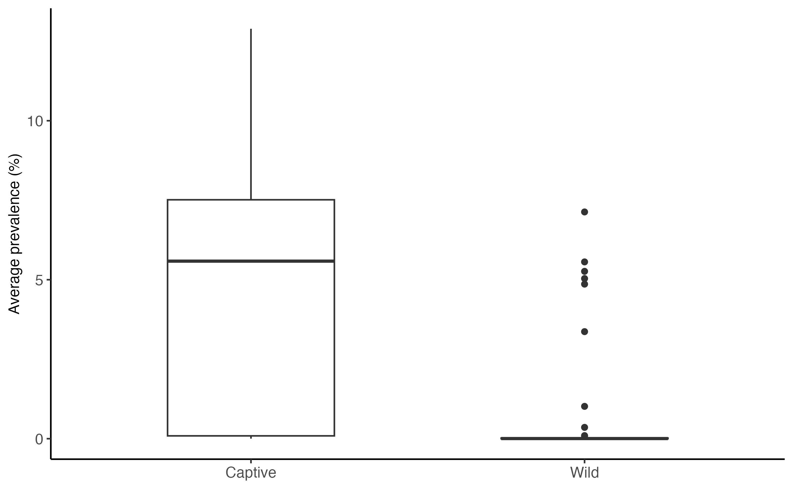
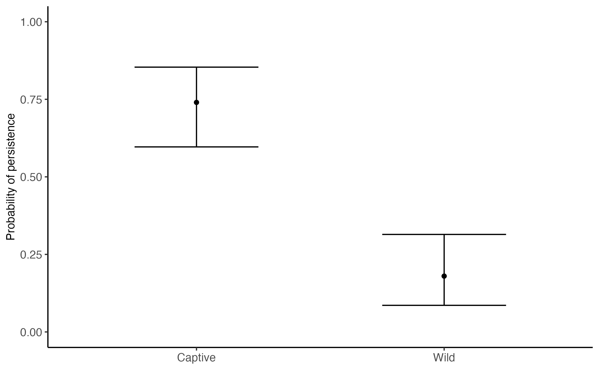
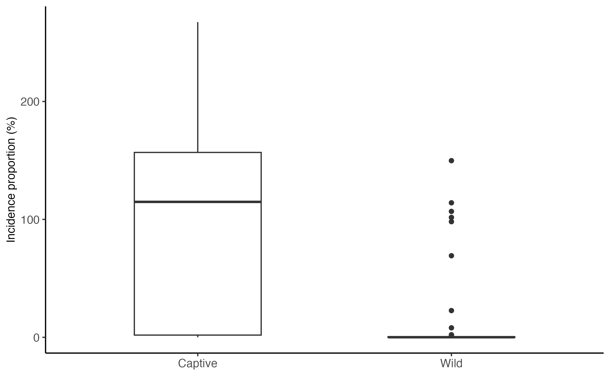

Introduction to a simple projection using whitetailedSIRS
F. Javiera Rudolph, Elias Rosenblatt
Source:vignettes/example_values.Rmd
example_values.RmdIntroduction
In this vignette, we explore how to use the functions in the whitetailedSIRS package to project SARS-CoV-2 outbreaks in white tailed deer. We will use data from a variety of sorces to parameterize the SIRS ODE equations explored in the sir_model_description vignette. We will also demonstrate how to display outputs for interpretation.
The general approach with simulating SARS-CoV-2 outbreaks here is to:
Set the number of simulations
Draw a random sample of parameters used to estimate infection probabilities, contact rates, and other important parameters.
Derive parameters used the SIRS ODE equation set
Define initial SIR compartment sizes
Solve the SIRS ODE equations and calculate daily compartment sizes
Calculate risk of introduction and magnitude of spread given parameters
Calculate average daily prevalence, probability of persistence, and incidence proportion.
1. Set number of simulations to run and context of simulation
Scenario: For this example, we will have fully susceptible wild and captive deer populations that are able to interact along a single fence line. Wild deer are in a rural setting with low human density. Captive deer are in a intensive captive facility, such as a facility focused on captive breeding. Both populations are interacting humans in their environments, with different rates and duration of proximity. SARS-CoV-2 prevalence in humans is a constant 5% of the population.
We set a seed so the results here are repeatable, and set the number of samples to the desired amount (nsamples). For this example, we will run 50 simulations.
set.seed(23)
nsamples <- 502. Sample parameters for simulations
Next, we need to draw random samples of various parameters that will lead the derivation of transmission risk parameters used in the SIRS ODE equations. Parameters available in the literature can be used, as well as those estimated using expert elicitation.
Several parameters necessary for deriving various transmission risks may not exist in the literature. To overcome the lack of empirical estimates, this package draws certain parameter estimates from an expert-elicitation process, detailed in Rosenblatt et al. In Prep. In the table below, elicited parameters , mean (mu) and standard deviations (sd), and error distributions (family) are specified. The code below and in following vignettes will draw values from these distributions for outbreak simulations.
For our purposes, we will use the following parameters from the table above:
- Temporary immunity: Days until aquired immunity to SARS-CoV-2 is lost
- Viral load: Concentration of SARS-CoV-2 in deer sputum (RNA copies/ml; relative to human sputum concentration 5.6 log10)
- Dose-response: Quanta SARS-CoV-2 dose-response in deer (1/quanta required for ID63)
- Deer proximity duration: Duration of proximity event between deer (all proximity types; minutes)
- Direct contact probability: Probability of deer making direct contact
- Deer-human proximity rate: Human-deer proximity rate in wild, rural, wild suburban, and captive scenarios(events/120 days)
- Deer-human proximity duration: Human-deer proximity duration in wild, rural, wild suburban, and captive scenarios(minutes)
- Deer-deer proximity rate, captive: Deer-deer proximity rate in captive facilities (events/day)
| parameter | mu | sd | family |
|---|---|---|---|
| Temporary Immunity | 4.7242475 | 0.6263917 | log-normal |
| Wastewater Infections | -1.3514319 | 1.4859109 | log-normal |
| Fomite Infections | -0.0414216 | 1.0317979 | log-normal |
| Viral Load | 0.2164608 | 0.3441431 | log-normal |
| Dose-Response | 0.2774736 | 0.2715960 | log-normal |
| Deer Proximity Duration (minutes) | 1.5525548 | 1.2720245 | log-normal |
| Direct Contact Probability | -1.4569674 | 0.7076163 | logit-normal |
| Proximity rate with baiting (17 events without baiting) | 3.4725955 | 0.2257397 | log-normal |
| Deer-Human Proximity Rate, Rural (per 120 days) | -1.5894802 | 1.6995012 | log-normal |
| Deer-Human Proximity Duration, Rural (minutes) | -0.3551466 | 0.9790162 | log-normal |
| Deer-Human Proximity Rate, Suburban (per 120 days) | 0.5726988 | 0.9511352 | log-normal |
| Deer-Human Proximity Duration, Suburban (minutes) | 0.4323951 | 0.9286978 | log-normal |
| Deer-Human Proximity Rate, Captive (per 120 days) | 2.5212570 | 1.1318730 | log-normal |
| Deer-Human Proximity Duration, Captive (minutes) | 1.7875291 | 1.1521344 | log-normal |
| Deer-Deer Proximity Rate, Captive (per day) | 3.4703201 | 0.9131761 | log-normal |
Using these elicited estimates, we draw a random sample for all
parameters listed above using the
draw_elicitation_samples.R function from the
whitetailedSIRS package:
EE_data <- whitetailedSIRS::elicitation_data
# bind samples to the elicitation df
whitetailedSIRS::draw_elicitation_samples(elicitation_data = EE_data, nsamples = nsamples,seed = 23) -> elicitation_dataWith the this code we generated a sample of 50 values for each of the
parameters elicited, using the appropriate distribution. We will use
some of those parameters now to calculate our transmission terms and
other parameters that go into the SIRS model. The
elicitation_data object is a tibble, and the sample of
values for each parameter is a vector of values within each cell of the
tibble for the my_sample column:
slice_head(elicitation_data, n = 5)
#> # A tibble: 5 × 5
#> parameter mu sd family my_sample
#> <chr> <dbl> <dbl> <chr> <list>
#> 1 Temporary Immunity 4.72 0.626 log-normal <dbl [50]>
#> 2 Wastewater Infections -1.35 1.49 log-normal <dbl [50]>
#> 3 Fomite Infections -0.0414 1.03 log-normal <dbl [50]>
#> 4 Viral Load 0.216 0.344 log-normal <dbl [50]>
#> 5 Dose-Response 0.277 0.272 log-normal <dbl [50]>We write a short helper function to help us extract each of the
vectors in the my_sample column, so these can be assigned
to the different parameters. This function
get_EE_param_vals.R is available for use from the
whitetailedSIRS package. Below, we show random draws for the duration of
temporary immunity following SARS-CoV-2 infection in deer:
whitetailedSIRS::get_EE_param_vals(data = elicitation_data, my_param = "Temporary Immunity")
#> [1] 127.13812 85.79547 199.59902 346.40581 210.29529 225.42113 94.63776
#> [8] 213.29355 115.89782 302.26460 129.15091 58.48126 94.01133 152.30523
#> [15] 52.57913 136.62800 81.32163 85.38631 77.38886 253.44842 190.09608
#> [22] 79.01995 184.58440 54.26715 80.78136 112.57102 81.71051 245.37052
#> [29] 74.47503 125.03823 79.65655 119.79087 54.92593 51.48566 99.25044
#> [36] 125.89298 255.53182 48.57184 193.18007 130.33635 216.39570 258.98849
#> [43] 203.72840 60.75563 52.59592 40.59831 119.35158 111.09585 155.38187
#> [50] 97.55897We set up all the parameters that were generated from the expert elicitation distributions. Any values used for conversions are discussed and referenced in Rosenblatt et al. In Prep:
# Immunity loss rate, the inverse of the duration of temporary immunity.
alpha_immunity <- 1 / whitetailedSIRS::get_EE_param_vals(data = elicitation_data, my_param = "Temporary Immunity")
# Proximity rate between wild deer using the contact_rate fx using defaults (see ?calc_contact_rate for details):
omega_ww <- whitetailedSIRS::calc_contact_rate(nsamples = nsamples, type_contact = "low")
# Proximity rate across fence lines (numerator drawn from literature)
omega_cw <- 0.00072 / get_EE_param_vals(data = elicitation_data, my_param = "Direct Contact Probability")
# Proximity rate between captive deer
omega_cc <- get_EE_param_vals(data = elicitation_data, my_param = "Deer-Deer Proximity Rate, Captive (per day)")
# Proximity rate between humans and deer in rural, wild settings
omega_hw <- get_EE_param_vals(data = elicitation_data, my_param = "Deer-Human Proximity Rate, Rural (per 120 days)") / 120
# Proximity rate between humans and deer in captive settings
omega_hc <- get_EE_param_vals(data = elicitation_data, my_param = "Deer-Human Proximity Rate, Captive (per 120 days)") /120
# Duration of proximity between deer in all scenarios
t_contact_deer_deer <- get_EE_param_vals(data = elicitation_data,my_param = "Deer Proximity Duration (minutes)")
# Duration of proximity between humans and deer in rural, wild settings
t_contact_deer_human_rural <- get_EE_param_vals(data = elicitation_data, my_param = "Deer-Human Proximity Duration, Rural (minutes)")
# Duration of proximity between humans and deer in captive settings
t_contact_deer_human_capt <- get_EE_param_vals(data = elicitation_data,my_param = "Deer-Human Proximity Duration, Captive (minutes)")
# Viral load proportional to human value (multiplier drawn from the literature):
C_nu <- 10^5.6 * get_EE_param_vals(data = elicitation_data, my_param = "Viral Load")
# Deer dose-response response for SARS-CoV-2 in aerosols
r_deer <- get_EE_param_vals(data = elicitation_data, my_param = "Dose-Response")
# Direct contact probability (same for all deer):
epsilon_dc <- get_EE_param_vals(data = elicitation_data, my_param = "Direct Contact Probability")Using the sets of parameters from expert elicitation we calculate
probability of infection via aerosol and direct contact. These
calculations are also informed by parameters from the literature (see
Rosenblatt et al. In Prep.), and formulations can be found in the
sir_model_description article. The calc_sigma_aero and
calc_sigma_dc functions listed below are included in the
whitetailedSIRS package, and estimate probabilties of
infection from SARS-CoV-2 transmitted by aerosols (aero) and by fluid
exchanged on direct contact (DC).
# aerosol transmission between deer, using deer exhalation/inhalation rates (default)
sigma_aero_deer_deer <- whitetailedSIRS::calc_sigma_aero(C_nu = C_nu,
t_contact = t_contact_deer_deer / 60,
r = r_deer)
# aerosol transmission from humans to deer in a rural, wild scenario, modifying exhalation rates to that of a human
sigma_aero_deer_human_rural <- whitetailedSIRS::calc_sigma_aero(ER = rep(0.53, nsamples), C_nu = C_nu, t_contact = t_contact_deer_human_rural/60, r = r_deer)
#aerosol transmission from humans to deer in a captive scenario, modifying exhalation rates to that of a human
sigma_aero_deer_human_capt <- whitetailedSIRS::calc_sigma_aero(ER = rep(0.53, nsamples), C_nu = C_nu, t_contact = t_contact_deer_human_capt/60, r = r_deer)
# direct contact fluid transmission between deer
sigma_dc_deer_deer <- whitetailedSIRS::calc_sigma_dc(C_nu = C_nu)Additionally, we include important parameters as constant values, including how long it takes for an individual deer to recover from an infection (gamma_recov) and human prevalence (I_human). We also need to define the role of vaccine boosters, and for now we set booster rates to zero. Implementation of vaccine boosters are a potential action that could be taken to influence outbreak severity. This and other interventions are discussed further in the Management_Alternatives_Systems vignette.
3. Derive parameters used the SIRS ODE equation set
Next, we use all of the parameters we just defined to calculate the
derived parameters necessary for use with the SIRS ODE equation sets.
This can be done using the alternative() function from the
whitetailedSIRS package:
list_params <- alternative(alpha_immunity = alpha_immunity, omega_ww = omega_ww, omega_cw = omega_cw, omega_cc = omega_cc, omega_hw = omega_hw, omega_hc = omega_hc, sigma_aero_deer_deer_wild = sigma_aero_deer_deer, sigma_aero_deer_deer_captive = sigma_aero_deer_deer, sigma_aero_deer_human_wild = sigma_aero_deer_human_rural, sigma_aero_deer_human_capt = sigma_aero_deer_human_capt, epsilon_dc = epsilon_dc, sigma_dc_deer_deer = sigma_dc_deer_deer, gamma_recov = gamma_recov, I_human = I_human, boost = boost)
str(list_params)
#> List of 12
#> $ alpha_immunity: num [1:50] 0.00787 0.01166 0.00501 0.00289 0.00476 ...
#> $ beta_aero_ww : num [1:50] 0.2532 0.0115 0.2061 0.0234 0.0725 ...
#> $ beta_aero_cw : num [1:50] 4.22e-04 1.49e-05 2.16e-04 1.74e-05 3.38e-05 ...
#> $ beta_aero_cc : num [1:50] 1.5444 0.072 1.5437 0.0414 1.4717 ...
#> $ beta_aero_hw : num [1:50] 1.14e-06 1.81e-05 4.31e-08 2.97e-06 4.18e-07 ...
#> $ beta_aero_hc : num [1:50] 0.024714 0.000191 0.004173 0.002105 0.001069 ...
#> $ beta_dc_ww : num [1:50] 0.000508 0.000218 0.000394 0.000715 0.001884 ...
#> $ beta_dc_cw : num [1:50] 8.48e-07 2.84e-07 4.13e-07 5.31e-07 8.79e-07 ...
#> $ beta_dc_cc : num [1:50] 0.0031 0.00137 0.00295 0.00126 0.03824 ...
#> $ gamma_recov : num [1:50] 0.167 0.167 0.167 0.167 0.167 ...
#> $ I_human : num [1:50] 0.05 0.05 0.05 0.05 0.05 0.05 0.05 0.05 0.05 0.05 ...
#> $ boost : num [1:50] 0 0 0 0 0 0 0 0 0 0 ...4. Define initial SIR compartment sizes
Now that we have all the parameters we need, we can list the initial compartment sizes to calculate how these compartments change through an outbreak, and calculate the steady state equilibrium size of the infected compartments. We have to set two sets of initial compartment sizes. The first detailed below is a compartment list that will be used to estimate daily compartment sizes and calculate the growing proportion of individuals infected over the course of the simulation (list_inits). The second detailed below is a similar list, but for calculation of the steady state of the SIRS ODE equation, which is used to designate if SARS-CoV-2 persists in a simulation (list_inits_steady). These lists will have the same value for S, I, and R compartments, and only differ with the inclusion of I_wild_cumulative and I_captive_cumulative arguments in list_inits (start at 0):
#Compartment sizes formatted to calculate daily prevalence and cumulative infections:
list_inits <- list(
S_wild = rep(1, nsamples),
I_wild = rep(0, nsamples),
R_wild = rep(0, nsamples),
I_wild_cumulative = rep(0, nsamples),
S_captive = rep(1, nsamples),
I_captive = rep(0, nsamples),
R_captive = rep(0, nsamples),
I_captive_cumulative = rep(0,nsamples)
)
#Compartment sizes formatted to calculate steady state equilibrium dynamics:
list_inits_steady <- list(
S_wild = rep(1, nsamples),
I_wild = rep(0, nsamples),
R_wild = rep(0, nsamples),
S_captive = rep(1, nsamples),
I_captive = rep(0, nsamples),
R_captive = rep(0, nsamples)
)5. Solve the SIRS ODE equations and calculate daily compartment sizes
First, we set the duration of the simulation.
#Set a sequence of days to model outbreaks
times <- seq(0, 120, by = 1)We can then solve the SIRS ode equations using the
sirs_results() function. This function requires a number of
simulations to run (iter), the initial compartment sizes
(initial_compartments), the initial compartment sizes calculating steady
state comnpartment sizes (initial_compartments_steady), the parameter
sets used for the simulation (params), and the duration of the
simulation (times). We finally add a name to this dataset, which will be
useful when running multiple parameter sets under different management
schemes or epidemiological conditions.
sirs_results <- run(iter = nsamples, initial_compartments = list_inits, initial_compartments_steady = list_inits_steady, params = list_params, times = times, name = "Example Values")If we look at the sirs_results object, we can see a tibble of list objects, arranged by each simulation (run_id).
slice_head(sirs_results, n = 3)
#> # A tibble: 3 × 7
#> run_id inits.fall inits.steady params ode_proj steady_state Context
#> <int> <list> <list> <list> <list> <list> <chr>
#> 1 1 <dbl [8]> <dbl [6]> <dbl [12]> <deSolve[…]> <named list> Example V…
#> 2 2 <dbl [8]> <dbl [6]> <dbl [12]> <deSolve[…]> <named list> Example V…
#> 3 3 <dbl [8]> <dbl [6]> <dbl [12]> <deSolve[…]> <named list> Example V…We can see the initial compartment sizes for projecting the outbreak (inits.fall) and for calculating the steady state infected compartment size (inits.steady). Note that the original application of the whitetailedSIRS package is projecting an outbreak during the fall season in North America (September-December). This explains references to “fall.” Here are the initial compartments for the first iteration of the simulation.
sirs_results$inits.fall[[1]]
#> S_wild I_wild R_wild
#> 1 0 0
#> I_wild_cumulative S_captive I_captive
#> 0 1 0
#> R_captive I_captive_cumulative
#> 0 0
sirs_results$inits.steady[[1]]
#> S_wild I_wild R_wild S_captive I_captive R_captive
#> 1 0 0 1 0 0We can also look at the parameters that were randomly drawn for the first iteration of the simulation.
sirs_results$params[[1]]
#> alpha_immunity beta_aero_ww beta_aero_cw beta_aero_cc beta_aero_hw
#> 7.865461e-03 2.531817e-01 4.224768e-04 1.544409e+00 1.136479e-06
#> beta_aero_hc beta_dc_ww beta_dc_cw beta_dc_cc gamma_recov
#> 2.471407e-02 5.079619e-04 8.476212e-07 3.098569e-03 1.666667e-01
#> I_human boost
#> 5.000000e-02 0.000000e+00The remaining columns for the sirs_results tibble include the daily sizes of each compartment, and the compartment sizes at steady state equilibrium. We will look at those results below in Section 7, but we can briefly plot the size of the Susceptible, Infectious, and Recovered compartments in both populations.
# get results in proper format:
sirs_results %>%
mutate(ode_df = map(ode_proj, as.data.frame)) %>%
pull(ode_df) %>%
list_rbind(names_to = "run_id") %>%
select(., -I_wild_cumulative, -I_captive_cumulative) %>%
pivot_longer(cols = -c(run_id, time), names_to = "compartment") %>%
mutate(Context = case_when(str_detect(compartment,"wild") ~ "Wild",
str_detect(compartment,"captive") ~ "Captive",),
Compartment = case_when(str_detect(compartment,"S") ~ "Susceptible",
str_detect(compartment,"I") ~ "Infected",
str_detect(compartment,"R") ~ "Recovered",)) %>%
mutate(Compartment = factor(Compartment, levels = c("Susceptible", "Infected", "Recovered"))) %>%
ggplot(., aes(x = time, y = value, group = run_id)) +
facet_grid(Context~Compartment) +
geom_line(linewidth = 0.2) +
labs(x = "Time (days)", y = "Proportion of population") +
theme_classic() +
theme(axis.text = element_text(size = 6), axis.title = element_text(size = 6),axis.title.x = element_text(size = 6), axis.text.x = element_text(size = 6), strip.text = element_text(size = 6)) We can see that outbreaks were far more common in captive settings, compared to wild deer in a rural area. The same number of simulations were run for each scenario.
6. Calculate risk of introduction and magnitude of spread given parameters
Here we demonstrate the calculation of epidemiological metrics to describe the rate of introduction of SARS-CoV-2 from humans to deer, the number of secondary infections resulting from an infectious deer. We use derived transmission parameters that are defined in depth in the sir_model_description vignette.
Force-Of-Infection
The first metric, termed the Force-Of-Infection (FOI), is the proportion of susceptible deer infected per day, in our case, by humans. The calculation is the product of the proximity rate between humans and deer, the probability of infection through aerosol transmission given the event, and the prevalence in the human population .
\[\begin{align} \tag{1} FOI_{wild,rural} = \beta_{HW}^{Aero} i_H\\ \tag{2} FOI_{captive} = \beta_{HC}^{Aero} i_H\\ \end{align}\]Below we provide the calculation and a plot comparing FOI in rural, wild deer and captive deer. Note that the y-axis is on the log-10 scaled:
#FOI
foi_wild <- omega_hw * sigma_aero_deer_human_rural * I_human
foi_captive <- omega_hc * sigma_aero_deer_human_capt * I_human
tibble("Wild, rural deer" = foi_wild, "Captive deer" = foi_captive) %>%
pivot_longer(cols = everything()) %>%
ggplot(data = ., aes(x = name, y = log10(value*100))) +
geom_boxplot() +
ylab("Percent susceptible deer infected\nby humans per day (FOI; log-10 scale)")+
theme_classic()+
theme(axis.text = element_text(size = 10), axis.title = element_text(size = 10),legend.text = element_text(size = 12), legend.title = element_text(size = 14), axis.title.x = element_blank(), axis.text.x = element_text(size = 10))
Probability of at least one infection per 1000 deer
FOI is sometimes hard to conceptualize, especially for the small values we estimate for wild deer in a rural setting. A useful conversion is the calculation of the probability of at least one deer becoming infected out of 1000 over the 120 days simulated here. We can do that using a constant hazard model (eqn. 3), where we take the FOI calculated above, consider a time period t of 120 days, for 1000 individuals (N):
\[\begin{align} \tag{3} p(HtD|FOI,N,t) = 1 - (e^{-FOI_{HD}t})^N \end{align}\]
#pHtD
pHtD_wild <- round((1-(exp(-last(times)*foi_wild)^1000)), 1)
pHtD_captive <- round((1-(exp(-last(times)*foi_captive)^1000)), 1)
tibble("Wild, rural deer" = pHtD_wild, "Captive deer" = pHtD_captive) %>%
pivot_longer(cols = everything()) %>%
ggplot(data = ., aes(x = name, y = value)) +
geom_boxplot(width = 0.5)+
theme_classic()+
scale_y_continuous("Probability of at least 1 HtD transmission\nper 1000 deer during 120-day projection", limits = c(0,1))+
theme(axis.text = element_text(size = 10), axis.title = element_text(size = 10),legend.text = element_text(size = 12), legend.title = element_text(size = 14), axis.title.x = element_blank(), axis.text.x = element_text(size = 10)) According to the pHtD plot above, there is a high change of at least one infection in captive facilities during the 120-day fall simulation. For wild deer in a rural setting, the chances of at least one infection are very low.
Basic reproductive number (\(R_0\))
Finally, we can calculate the number of secondary infection caused by an infectious deer. This calculation is the sum of transmission risks between deer, from aerosols (\(\beta_{WW}^{Aero}\) , \(\beta_{CC}^{Aero}\))and from fluid exchanged on direct contact (\(\beta_{WW}^{DC}\) , \(\beta_{CC}^{DC}\)), divided by the recovery rate from infection (\(\gamma\); eqn 4 & 5).
\[\begin{align} \tag{4} R_{0,wild, rural} = \tfrac{\beta_{WW}^{Aero} + \beta_{WW}^{DC}}{\gamma}\\ \tag{5} R_{0,captive} = \tfrac{\beta_{CC}^{Aero} + \beta_{CC}^{DC}}{\gamma},\\ \end{align}\]Below we calculate and plot the range of \(R_0\) for captive deer and wild deer in a rural setting.
r0_deer_wild <- ((omega_ww * sigma_aero_deer_deer) + (omega_ww * sigma_dc_deer_deer * epsilon_dc)) * 1/gamma_recov
r0_deer_captive <- ((omega_cc * sigma_aero_deer_deer) + (omega_cc * sigma_dc_deer_deer * epsilon_dc)) * 1/gamma_recov
tibble("Wild, rural deer" = r0_deer_wild, "Captive deer" = r0_deer_captive) %>%
pivot_longer(cols = everything()) %>%
ggplot(., aes(x = name, y = value)) +
geom_boxplot() +
geom_hline(yintercept = 1, color = "red", linetype = "dashed") +
ylim(c(0,10))+
ylab("Basic reproductive number (R0)")+
theme_classic()+
theme(axis.text = element_text(size = 10), axis.title = element_text(size = 10),legend.text = element_text(size = 12), legend.title = element_text(size = 14), axis.title.x = element_blank(), axis.text.x = element_text(size = 10)) Captive deer clearly have higher \(R_0\) values compared to wild deer in rural settings, as well as greater variation. Median \(R_0\) in captivity is much greater than the threshold (\(R_0\) == 1; red dashed line) for sustained spread of infections in a population.
7. Calculate average daily prevalence, probability of persistence, and incidence proportion.
Finally, we can characterize outbreaks of SARS-CoV-2 in our simulations using three metrics that describe the severity and extent of infections. These metrics include prevalence, persistence, and incidence proportion.
Prevalence
Below we calculate the average daily prevalence of SARS-CoV-2 in captive and wild white-tailed deer. We simply average the daily infected compartment size across the 120-day simulation for each simulation, and compare median values across contexts.
sirs_results %>%
mutate(ode_df = map(ode_proj, as.data.frame)) %>%
pull(ode_df) %>%
list_rbind(names_to = "run_id") %>%
select(., run_id, I_wild, I_captive) %>%
rename(., Wild = I_wild,
Captive = I_captive) %>%
gather("Compartment", "prevalence", -run_id) %>%
group_by(run_id, Compartment) %>%
summarize(Prevalence = mean(prevalence)*100) %>%
ggplot(., aes(x = Compartment, y = Prevalence)) +
geom_boxplot(width = 0.5)+
theme_classic()+
scale_y_continuous("Average prevalence (%)")+
theme(axis.text = element_text(size = 10), axis.title = element_text(size = 10),legend.text = element_text(size = 12), legend.title = element_text(size = 14), axis.title.x = element_blank(), axis.text.x = element_text(size = 10))
#> `summarise()` has grouped output by 'run_id'. You can override using the
#> `.groups` argument.
The simulations of deer in a captive setting had a much higher median prevalence, compared to the simulations in a wild setting.
Persistence
persist.threshold <- 0.001
sirs_results %>%
mutate(steady_sir = map(steady_state, "y"),
steady_sir = map(steady_sir, as_tibble_row)) %>%
pull(steady_sir) %>%
list_rbind(names_to = "run_id") %>%
mutate(., Wild = I_wild > persist.threshold, Captive = I_captive > persist.threshold) %>%
select(., run_id, Captive, Wild) %>%
gather("Compartment", "Persist", -run_id) %>%
group_by(Compartment) %>%
summarize(., Persistence = sum(Persist)) %>%
mutate(LCL = binom.confint(Persistence, n = nsamples, methods = "exact")$lower, pred = binom.confint(Persistence, n = nsamples, methods = "exact")$mean ,UCL = binom.confint(Persistence, n = nsamples, methods = "exact")$upper) %>%
ggplot(., aes(x = Compartment, y = pred))+
geom_point()+
geom_errorbar(aes(ymin = LCL, ymax = UCL), width = 0.5)+
scale_fill_grey()+
theme_classic()+
scale_y_continuous("Probability of persistence", limits = c(0,1))+
theme(axis.text = element_text(size = 10), axis.title = element_text(size = 10),legend.text = element_text(size = 12), legend.title = element_text(size = 14), axis.title.x = element_blank(), axis.text.x = element_text(size = 10))
For this example, we can see that the median probability of SARS-CoV-2 persisting is approximately 75%, whereas median persistence in the simulated wild deer population is approximiately 20%.
Incidence proportion
Finally, we can calculate the cumulative proportion of the population that is infected over the course of the projection. This metric summarizes the extent of the infection in a population.
sirs_results %>%
mutate(ode_df = map(ode_proj, as.data.frame)) %>%
pull(ode_df) %>%
list_rbind(names_to = "run_id") %>%
select(., run_id, I_wild_cumulative, I_captive_cumulative) %>%
rename(., Wild = I_wild_cumulative,
Captive = I_captive_cumulative) %>%
gather("Compartment", "Incidence_Proportion", -run_id) %>%
group_by(run_id, Compartment) %>%
summarize(Incidence_Proportion = last(Incidence_Proportion)*100) %>%
ggplot(., aes(x = Compartment, y = Incidence_Proportion)) +
geom_boxplot(width = 0.5)+
theme_classic()+
scale_y_continuous("Incidence proportion (%)")+
theme(axis.text = element_text(size = 10), axis.title = element_text(size = 10),legend.text = element_text(size = 12), legend.title = element_text(size = 14), axis.title.x = element_blank(), axis.text.x = element_text(size = 10))
#> `summarise()` has grouped output by 'run_id'. You can override using the
#> `.groups` argument.
Next Steps
This vignette showed an example of how we can use various whitetailedSIRS functions to project disease outbreaks in white-tailed deer, and summarize outbreak characteristics across simulations. With reading this vignette and previous vignettes, users are prepared to start exploring their own simulations using whitetailedSIRS. In the following vignettes, we will illustrate the use of whitetailedSIRS in analyses published in Rosenblatt et al. (In Prep) and Cook et al. (In Prep). We will start with running simulations for Rosenblatt et al.’s (In Prep) analysis of outbreak dynamics given continuous spillover from humans in wild and captive settings.
Click here to return to the vignette detailing the SIRS ODE equations used in whitetailedSIRS.
Literature Cited
Cook, J.D., E. Rosenblatt, G.V. Direnzo, E.H.C. Grant, B.A. Mosher, F. Arce, S. Christensen, R. Ghai, M.C. Runge. In Prep. Using decision science to evaluate the risk and management of SARS-CoV-2 zoonotic transmission between humans and white-tailed deer.
Rosenblatt, E., J.D. Cook, G.V. Direnzo, E.H.C. Grant, F. Arce, K. Pepin, F.J. Rudolph, M.C. Runge, S. Shriner, D. Walsh, B.A. Mosher. In Prep. Epidemiological modeling of SARS-CoV-2 in white-tailed deer (Odocoileus virginianus) reveals conditions for introduction and widespread transmission.